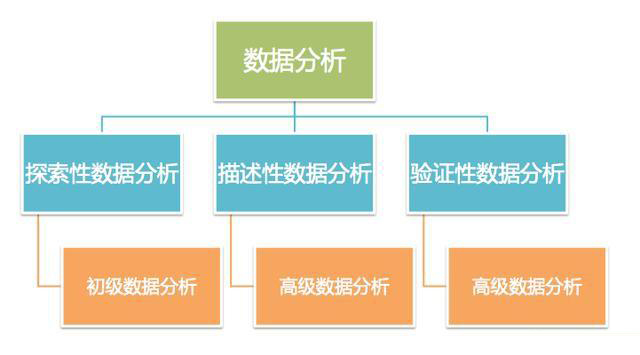
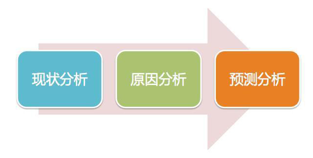

<!DOCTYPE html><html><head><meta charset="utf-8"><title>什么是数据分析？数据分析的作用是什么？ | 技术学派</title><meta name="viewport" content="width=device-width,initial-scale=1,maximum-scale=1"><meta name="keywords" content="IT培训, Python, 大数据, 人工智能, Web前端, PHP, "><meta name="description" content="1.什么是数据分析？数据分析的目的是把隐藏在一些看似杂乱无章的数据背后的信息提炼出来，总结出所研究对象的内在规律。在实际工作中，数据分析能够帮助管理者进行判断和决策，以便采取适当策略与行动。比如：企业的高管希望通过市场分析和研究，把握当前产品的市场动向，从而制定合理的产品研发和销售计划，这就必须依赖数据分析才能够完成。简单的说，就是对数据进行分析，比较专业的说法是，数据分析是指用适当的统计分析方法"><meta property="og:type" content="article"><meta property="og:title" content="什么是数据分析？数据分析的作用是什么？"><meta property="og:url" content="http://www.JiShuXuePai.com/blog/学习答疑/学习答疑/什么是数据分析？数据分析的作用是什么？/index.html"><meta property="og:site_name" content="技术学派"><meta property="og:description" content="1.什么是数据分析？数据分析的目的是把隐藏在一些看似杂乱无章的数据背后的信息提炼出来，总结出所研究对象的内在规律。在实际工作中，数据分析能够帮助管理者进行判断和决策，以便采取适当策略与行动。比如：企业的高管希望通过市场分析和研究，把握当前产品的市场动向，从而制定合理的产品研发和销售计划，这就必须依赖数据分析才能够完成。简单的说，就是对数据进行分析，比较专业的说法是，数据分析是指用适当的统计分析方法"><meta property="og:locale" content="zh-CN"><meta property="og:image" content="http://www.jishuxuepai.com/blog/学习答疑/学习答疑/什么是数据分析？数据分析的作用是什么？/01.jpg"><meta property="og:updated_time" content="2018-07-12T07:41:51.000Z"><meta name="twitter:card" content="summary"><meta name="twitter:title" content="什么是数据分析？数据分析的作用是什么？"><meta name="twitter:description" content="1.什么是数据分析？数据分析的目的是把隐藏在一些看似杂乱无章的数据背后的信息提炼出来，总结出所研究对象的内在规律。在实际工作中，数据分析能够帮助管理者进行判断和决策，以便采取适当策略与行动。比如：企业的高管希望通过市场分析和研究，把握当前产品的市场动向，从而制定合理的产品研发和销售计划，这就必须依赖数据分析才能够完成。简单的说，就是对数据进行分析，比较专业的说法是，数据分析是指用适当的统计分析方法"><meta name="twitter:image" content="http://www.jishuxuepai.com/blog/学习答疑/学习答疑/什么是数据分析？数据分析的作用是什么？/01.jpg"><link rel="stylesheet" href="/libs/bootstrap/bootstrap-grid.css"><link rel="stylesheet" href="/libs/font-awesome/css/font-awesome.min.css"><link rel="stylesheet" href="/libs/titillium-web/styles.css"><link rel="stylesheet" href="/libs/source-code-pro/styles.css"><link rel="stylesheet" href="/css/style.css"><script src="/libs/jquery/jquery.min.js"></script><link rel="stylesheet" href="/libs/lightgallery/css/lightgallery.min.css"><link rel="stylesheet" href="/libs/justified-gallery/justifiedGallery.min.css"><script>var _hmt=_hmt||[];!function(){var e=document.createElement("script");e.src="//hm.baidu.com/hm.js?4c1bd812de3c30edbaa2b803c66f0a04";var t=document.getElementsByTagName("script")[0];t.parentNode.insertBefore(e,t)}()</script></head></html><body><div id="wrap"><header id="header"><div id="header-outer" class="outer"><div class="container"><div class="container-inner"><div id="header-title"><h1 class="logo-wrap"><a href="/" class="logo"></a></h1></div><div id="header-inner" class="nav-container"><a id="main-nav-toggle" class="nav-icon fa fa-bars">菜单</a><div class="nav-container-inner"><ul id="main-nav"><li class="main-nav-list-item"><a class="main-nav-list-link" href="/">主页</a></li><li class="main-nav-list-item"><a class="main-nav-list-link" href="/edu/index.html">学编程</a></li><li class="main-nav-list-item"><a class="main-nav-list-link" href="/blog/">博客</a></li><li class="main-nav-list-item"><a class="main-nav-list-link" href="/tips.html">学习建议</a></li><li class="main-nav-list-item"><a class="main-nav-list-link" href="/about.html">关于</a></li></ul><nav id="sub-nav"><div id="search-form-wrap"><form class="search-form"><input type="text" class="ins-search-input search-form-input" placeholder="搜索"> <button type="submit" class="search-form-submit"></button></form><div class="ins-search"><div class="ins-search-mask"></div><div class="ins-search-container"><div class="ins-input-wrapper"><input type="text" class="ins-search-input" placeholder="想要查找什么..."> <span class="ins-close ins-selectable"><i class="fa fa-times-circle"></i></span></div><div class="ins-section-wrapper"><div class="ins-section-container"></div></div></div></div><script>window.INSIGHT_CONFIG={TRANSLATION:{POSTS:"文章",PAGES:"页面",CATEGORIES:"分类",TAGS:"标签",UNTITLED:"(未命名)"},ROOT_URL:"/",CONTENT_URL:"/content.json"}</script><script src="/js/insight.js"></script></div></nav></div></div></div></div></div></header><div class="container"><div class="main-body container-inner"><div class="main-body-inner"><section id="main"><div class="main-body-header"><h1 class="header"><a class="page-title-link" href="/categories/学习答疑/">学习答疑</a><div class="author"></div></h1></div><div class="main-body-content"><article id="post-学习答疑/什么是数据分析？数据分析的作用是什么？" class="article article-single article-type-post" itemscope itemprop="blogPost"><div class="article-inner"><header class="article-header"><h1 class="article-title" itemprop="name">什么是数据分析？数据分析的作用是什么？</h1></header><div class="article-meta"><div class="article-date"><a href="/blog/学习答疑/学习答疑/什么是数据分析？数据分析的作用是什么？/" class="article-date"><time datetime="2018-07-11T01:36:16.000Z" itemprop="datePublished">2018-07-11</time></a></div></div><div class="article-entry" itemprop="articleBody"><h3 id="1-什么是数据分析？"><a href="#1-什么是数据分析？" class="headerlink" title="1.什么是数据分析？"></a>1.什么是数据分析？</h3><p>数据分析的目的是把隐藏在一些看似杂乱无章的数据背后的信息提炼出来，总结出所研究对象的内在规律。在实际工作中，数据分析能够帮助管理者进行判断和决策，以便采取适当策略与行动。比如：企业的高管希望通过市场分析和研究，把握当前产品的市场动向，从而制定合理的产品研发和销售计划，这就必须依赖数据分析才能够完成。</p><p>简单的说，就是对数据进行分析，比较专业的说法是，数据分析是指用适当的统计分析方法对收集来的大量数据进行分析，未提取有用信息和形成结论而对数据加以详细研究和概括总结的过程。以求最大化地开发数据的功能，发挥数据的作用。</p><p>数据分析包含“数据”和“分析”两个方面一方面包括加工和整理数据，另一方面也包括分析数据，从中提取有价值的信息并形成对业务有帮助的结论。</p><p>数据分析的成果通常以分析报告的形式呈现。对于数据分析报告，分析就是论点，数据就是论据，两者缺一不可。</p><h3 id="2-数据分析类别"><a href="#2-数据分析类别" class="headerlink" title="2.数据分析类别"></a>2.数据分析类别</h3><p>其中，探索性数据分析侧重于在数据中发现新的特征，而验证性数据分析则侧重于验证已有假设的真伪证明。</p><p>数据分析的划分：描述性数据分析、探索性数据分析、验证性数据分析。</p><p></p><p>1）描述性数据分析：属于初级数据分析，常见的分析方法有对比分析法、平均分析法、交叉分析法。</p><p>2）探索性数据分析：侧重于再数据之中发现新的特征</p><p>3）验证性数据分析：侧重于验证已有假设的真伪证明</p><p><strong>其中探索性数据分析和验证性数据分析属于高级数据分析，常见的分析方法有相关分析、因子分析、回归分析等等。</strong></p><p><strong>3.数据分析的作用</strong></p><p>数据分析在日常企业运营中主要有三大作用：</p><p></p><p><strong>1.现状分析</strong></p><p>简单的说就是告诉你过去发生了什么。</p><p>具体表现在：</p><p>第一，告诉你企业现阶段的整体运营情况，通过各个经营指标的完成情况来衡量企业的运营状态，以说明企业整体运营是更好了还是坏了，好的程度是如何，坏的程度又到哪里。</p><p>第二，告诉你企业各项业务的构成，让你了解企业各项业务的发展及变动情况，对企业经营状况有更深入的了解。</p><p>现状分析一般通过日常通报来完成，如日报、周报、月报等形式。</p><p><strong>2.原因分析</strong></p><p>简单的说就是告诉你某一现状为什么发生。经过第一阶段的现状分析，我们对企业的运营情况有了一个基本的了解，但是不知道运营情况具体好在哪里，差在哪里，是什么原因引起的。这时候我们就需要开展原因分析，以进一步确定业务变动的具体原因。</p><blockquote><p>原因分析一般通过专题分析来完成，根据企业运营情况选择针对某一现状进行原因分析。</p></blockquote><p><strong>3.预测分析</strong></p><p>简单来说就是告诉你将来会发生什么。</p><p>在了解企业运营现状后，有时候还需要对企业未来发展趋势做出预测，为企业制定经营目标以及提供有效的策略参考与决策依据，以确保企业的可持续健康发展。</p><p>预测分析一般通过专题分析来完成，通常在制定企业季度、年度等计划时进行，其开展的频率没有现状分析及原因分析高。</p><blockquote><p>什么时候开展什么样的数据分析，需要根据自身的需求及目的来确定。</p></blockquote></div><footer class="article-footer"><a data-url="http://www.JiShuXuePai.com/blog/学习答疑/学习答疑/什么是数据分析？数据分析的作用是什么？/" data-id="cjji90e2k0000b9fyw4ulbr75" class="article-share-link"><i class="fa fa-share"></i>分享到</a><script>!function(n){n("body").on("click",function(){n(".article-share-box.on").removeClass("on")}).on("click",".article-share-link",function(t){t.stopPropagation();var e,a=n(this),o=a.attr("data-url"),r=encodeURIComponent(o),i="article-share-box-"+a.attr("data-id"),s=a.offset();if(n("#"+i).length){if((e=n("#"+i)).hasClass("on"))return void e.removeClass("on")}else{var l=['<div id="'+i+'" class="article-share-box">','<input class="article-share-input" value="'+o+'">','<div class="article-share-links">','<a href="https://twitter.com/intent/tweet?url='+r+'" class="article-share-twitter" target="_blank" title="Twitter"></a>','<a href="https://www.facebook.com/sharer.php?u='+r+'" class="article-share-facebook" target="_blank" title="Facebook"></a>','<a href="http://pinterest.com/pin/create/button/?url='+r+'" class="article-share-pinterest" target="_blank" title="Pinterest"></a>','<a href="https://plus.google.com/share?url='+r+'" class="article-share-google" target="_blank" title="Google+"></a>',"</div>","</div>"].join("");e=n(l),n("body").append(e)}n(".article-share-box.on").hide(),e.css({top:s.top+25,left:s.left}).addClass("on")}).on("click",".article-share-box",function(t){t.stopPropagation()}).on("click",".article-share-box-input",function(){n(this).select()}).on("click",".article-share-box-link",function(t){t.preventDefault(),t.stopPropagation(),window.open(this.href,"article-share-box-window-"+Date.now(),"width=500,height=450")})}(jQuery)</script></footer></div></article><section id="comments"><div id="gitalk_frame"></div></section></div></section><aside id="sidebar"><a class="sidebar-toggle" title="Expand Sidebar"><i class="toggle icon"></i></a><div class="sidebar-top"><p>关注我 :</p><ul class="social-links"><li><a class="social-tooltip" title="火星时代" href="http://edu.hxsd.com/edunew/topics/webfull/index.html" target="_blank"><i class="icon fa fa-dribbble"></i></a></li><li><a class="social-tooltip" title="weibo" href="#" target="_blank"><i class="icon fa fa-weibo"></i></a></li><li><a class="social-tooltip" title="rss" href="/atom.xml" target="_blank"><i class="icon fa fa-rss"></i></a></li></ul></div><nav id="article-nav"><a href="/blog/学习答疑/学习答疑/零基础程序员自学编程的6种方法，你知道吗？/" id="article-nav-newer" class="article-nav-link-wrap"><strong class="article-nav-caption">下一篇</strong><p class="article-nav-title">零基础程序员自学编程的6种方法，你知道吗？</p><i class="icon fa fa-chevron-right" id="icon-chevron-right"></i> </a><a href="/blog/学习答疑/学习答疑/9张图让初学者读懂目前最火的编程语言及区别，你pick谁？/" id="article-nav-older" class="article-nav-link-wrap"><strong class="article-nav-caption">上一篇</strong><p class="article-nav-title">9张图让初学者读懂目前最火的编程语言及区别，你pick谁？</p><i class="icon fa fa-chevron-left" id="icon-chevron-left"></i></a></nav><div class="widgets-container"><div class="widget-wrap widget-list"><h3 class="widget-title">分类</h3><div class="widget"><ul class="category-list"><li class="category-list-item"><a class="category-list-link" href="/categories/animate/">animate</a><span class="category-list-count">17</span></li><li class="category-list-item"><a class="category-list-link" href="/categories/git/">git</a><span class="category-list-count">1</span></li><li class="category-list-item"><a class="category-list-link" href="/categories/html/">html</a><span class="category-list-count">2</span></li><li class="category-list-item"><a class="category-list-link" href="/categories/js/">js</a><span class="category-list-count">5</span></li><li class="category-list-item"><a class="category-list-link" href="/categories/php/">php</a><span class="category-list-count">3</span></li><li class="category-list-item"><a class="category-list-link" href="/categories/vue/">vue</a><span class="category-list-count">1</span></li><li class="category-list-item"><a class="category-list-link" href="/categories/学习答疑/">学习答疑</a><span class="category-list-count">43</span></li><li class="category-list-item"><a class="category-list-link" href="/categories/插件资源库/">插件资源库</a><span class="category-list-count">4</span></li></ul></div></div><link rel="stylesheet" href="/css/tech/toc.css"><div class="widget-wrap widget-list widget-toc"><h3 class="widget-title">目录</h3><div class="widget"><div class="toc"></div><link rel="stylesheet" href="https://cdnjs.cloudflare.com/ajax/libs/tocbot/3.0.5/tocbot.css"><script src="https://cdnjs.cloudflare.com/ajax/libs/tocbot/3.0.5/tocbot.min.js"></script><script>$(function(){$(".main-body-content").find("h1,h2,h3").each(function(t){$(this).attr("id")||$(this).attr("id","list"+t)}),tocbot.init({tocSelector:".toc",contentSelector:".main-body-content",headingSelector:"h1, h2, h3",collapseDepth:2,positionFixedSelector:".widget-toc",fixedSidebarOffset:595,includeHtml:!1})})</script></div></div><div class="widget-wrap widget-list"><h3 class="widget-title">标签</h3><div class="widget"><ul class="tag-list"><li class="tag-list-item"><a class="tag-list-link" href="/tags/C/">C</a><span class="tag-list-count">2</span></li><li class="tag-list-item"><a class="tag-list-link" href="/tags/go/">go</a><span class="tag-list-count">1</span></li><li class="tag-list-item"><a class="tag-list-link" href="/tags/php/">php</a><span class="tag-list-count">1</span></li><li class="tag-list-item"><a class="tag-list-link" href="/tags/python/">python</a><span class="tag-list-count">17</span></li><li class="tag-list-item"><a class="tag-list-link" href="/tags/web前端/">web前端</a><span class="tag-list-count">2</span></li></ul></div></div><div class="widget-wrap widget-float"><h3 class="widget-title">标签云</h3><div class="widget tagcloud"><a href="/tags/C/" style="font-size:15px">C</a> <a href="/tags/go/" style="font-size:10px">go</a> <a href="/tags/php/" style="font-size:10px">php</a> <a href="/tags/python/" style="font-size:20px">python</a> <a href="/tags/web前端/" style="font-size:15px">web前端</a></div></div><div class="widget-wrap widget-list"><h3 class="widget-title">链接</h3><div class="widget"><ul><li><a href="http://edu.hxsd.com/edunew/topics/webfull/index.html">火星时代</a></li></ul></div></div></div></aside><script>$(function(){$(window).scroll(function(){240<=$(document).scrollTop()?($("#sidebar .sidebar-toggle").addClass("fix"),"block"==$("#sidebar .sidebar-toggle").css("display")&&$(".is-position-fixed").css("top","35px")):$("#sidebar .sidebar-toggle").removeClass("fix")})})</script></div></div></div><footer id="footer"><div class="top"><div class="inner"><div class="list"><div class="left clearfix"><dl><dt>关于我们</dt><dd><a href="/about.html" target="_blank">公司简介</a></dd><dd><a href="edu/index.html" target="_blank">联系我们</a></dd></dl><dl><dt>校区攻略</dt><dd><a href="edu/index.html" target="_blank">校区环境</a></dd><dd><a href="edu/index.html" target="_blank">住宿攻略</a></dd><dd><a href="edu/index.html" target="_blank">来校路线</a></dd></dl><dl><dt>课程培训</dt><dd><a href="edu/python.html" target="_blank">Python</a></dd><dd><a href="edu/python.html" target="_blank">Web前端</a></dd><dd><a href="edu/python.html" target="_blank">PHP</a></dd><dd><a href="edu/python.html" target="_blank">人工智能</a></dd><dd><a href="edu/python.html" target="_blank">大数据</a></dd></dl><dl><dt>常见问答</dt><dd><a href="edu/index.html" target="_blank">学费学时</a></dd><dd><a href="edu/index.html" target="_blank">学习方法</a></dd></dl></div></div><div class="tel"><tel>176-0025-8815</tel><span>北京市海淀区杏石口路81号火星时代大厦</span></div><div class="weixin"><div class="w1"> <span>头条号</span></div><div class="w1"> <span>官方微信</span></div></div></div></div><div class="bot">Copyright 2018 技术学派 京ICP备15015508号-3</div></footer><link rel="stylesheet" href="https://unpkg.com/gitalk/dist/gitalk.css"><script src="https://unpkg.com/gitalk/dist/gitalk.min.js"></script><script>var gitalk=new Gitalk({clientID:"2fbbb9980b49019d99a7",clientSecret:"152dd10e83ef6595761ea2185304f9ac8263573f",repo:"jsxp",owner:"li-kang",admin:["li-kang"]});gitalk.render("gitalk_frame")</script><script src="/libs/lightgallery/js/lightgallery.min.js"></script><script src="/libs/lightgallery/js/lg-thumbnail.min.js"></script><script src="/libs/lightgallery/js/lg-pager.min.js"></script><script src="/libs/lightgallery/js/lg-autoplay.min.js"></script><script src="/libs/lightgallery/js/lg-fullscreen.min.js"></script><script src="/libs/lightgallery/js/lg-zoom.min.js"></script><script src="/libs/lightgallery/js/lg-hash.min.js"></script><script src="/libs/lightgallery/js/lg-share.min.js"></script><script src="/libs/lightgallery/js/lg-video.min.js"></script><script src="/libs/justified-gallery/jquery.justifiedGallery.min.js"></script><script src="/js/main.js"></script></div></body>